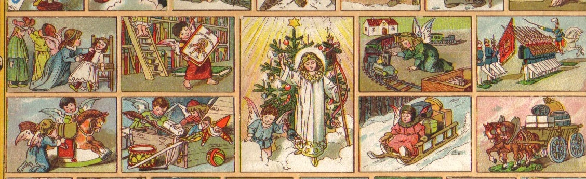
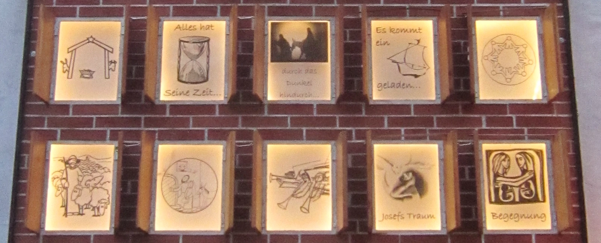

아직 펼치지 않은 카드
아직 펼치지 않은 카드
대림절은 성탄을 기다리는 네 주예요. 19세기 말 독일의 한 목사 집에서, 어머니가 판지에 작은 과자 24개를 붙여 아들에게 주었어요. 그 아들 게르하르트 랑은 자라서, 날마다 그림을 한 장씩 오려 붙이는 달력을 펴냈어요. 둘째 장면에서 그림을 다 붙인 그 달력의 칸을 하나씩 눌러 보세요.
옛날 독일의 한 아이는 엄마가 만든 과자 달력에서 날마다 과자를 하나씩 떼어 먹었대. 그 아이가 커서 그림 달력을 만들었어! 칸을 하나씩 눌러 볼까?
검수 전 시안이에요(기준서 1판). 장면에는 기록에 있는 것만 옮겼고, 자료마다 다른 해는 ‘기록마다 다른 점’에 모았어요. 상상은 ‘눈 감고 상상해 보기’에만 썼어요.
19세기 독일의 아이들은 성탄까지 남은 날을 여러 가지로 셌어요. 문에 분필로 24줄을 긋고 날마다 하나씩 지우는 집도 있었고, 착한 일을 할 때마다 아기 예수를 누일 빈 구유에 지푸라기를 하나씩 넣는 집도 있었어요.
마울브론의 목사 부인 셀마 랑은 판지에 ‘비벨레’라는 작은 과자 24개를 붙여 아들 게르하르트에게 주었어요. 아이는 날마다 하나씩 떼어 먹으며 성탄을 기다렸어요.

엄마가 판지에 작은 과자를 24개 붙여 줬대. 하루에 하나씩 떼어 먹는 거야!
물어보기하루에 과자 하나씩, 너라면 끝까지 기다릴 수 있을까?
게르하르트 랑은 자라서 뮌헨의 출판인이 되었어요. 1908년, 몇 번 만들어 본 끝에 「아기 예수의 나라에서」라는 달력을 펴냈어요. 그림은 화가 리하르트 에른스트 케플러가 그리고, 칸마다 들어갈 짧은 시는 랑이 직접 썼어요.
판지의 칸 24개에는 성탄을 기다리는 짧은 시가 적혀 있었어요. 아이는 날마다 따로 딸린 종이에서 그날의 그림을 오려, 뒷면에 물을 묻혀 그 칸 위에 붙였어요. 아래는 1915년에 다시 인쇄한 달력으로, 그림을 다 붙여 시가 가려진 모습이에요.
그림을 다 붙인 달력이에요. 칸 속 작은 것들을 하나씩 눌러 보세요.

게르하르트 랑의 달력 「아기 예수의 나라에서」, 1915년에 다시 인쇄한 것(그림을 다 붙인 모습) · 그림: 리하르트 에른스트 케플러 · 퍼블릭 도메인 · 위키미디어 공용
그림 위의 숫자나 아래 번호를 눌러 보세요.
다 찾았어요. 이 달력의 빈칸은 이렇게 하루하루 그림으로 채워졌어요.
24칸이 다 차는 날이 성탄 전야였어요. 기다림이 눈에 보이는 그림으로 쌓였어요.
우리 집 대림절 달력 칸에는 무엇을 넣을까요?
날마다 그림을 하나씩 오려서 붙이는 달력이야. 칸을 하나씩 눌러 볼래?
물어보기오늘 그림을 하나 붙인다면, 어떤 그림이면 좋겠어?
눈 감고 상상해 보기
12월의 아침, 창밖은 아직 어둑해요. 가위가 사각사각, 오늘의 그림이 종이에서 떨어져요. 뒷면에 물을 살짝 묻혀 빈칸에 꾹 눌러요. 빈칸이 하나 줄었어요. 성탄이 꼭 그만큼 가까워졌어요.
눈을 감아 봐. 가위로 사각사각, 오늘 그림을 오려. 뒤에 물을 콕 묻혀서 꾹! 성탄이 하루 더 가까워졌어.
나는 지금 무엇을 기다리고 있나요? 그 기다림을 하루씩 센다면, 오늘은 어떤 창을 열고 싶나요?
성탄절까지 며칠 남았는지 손가락으로 세어 볼까?
마음에 닿는 한 줄을 고르거나 직접 써 보세요. 한 줄을 남기면 이 자리의 도장이 찍혀요. 이 기기에만 저장돼요.
이야기를 보다 궁금해질 만한 것들이에요. 답을 읽거나 짧은 영화로 보세요.


아직 펼치지 않은 이야기예요. 누르면 이야기가 펼쳐지고 색이 돌아와요. 더 알고 싶으면 근거를 따라가 보세요.
다 펼치면, 다음에 오실 때 새 이야기가 찾아와요.
오늘의 뒷이야기는 여기까지예요. 다음에 오시면 새 이야기가 기다리고 있어요.
펼친 뒷이야기 · 누르면 다시 볼 수 있어요
가장 오래된 인쇄 달력 「아기 예수의 나라에서」는 흔히 첫 인쇄 대림절 달력으로 꼽혀 왔어요. 하지만 독일 성탄 박물관은 1900년 뮌헨의 카를 슈트라우프 이름으로 실용신안 보호를 받은 ‘성 니콜라오 산타클로스’라는 달력을 가장 오래된 인쇄 달력으로 들어요. 1900년은 보호를 받은 해이고, 언제 나왔는지는 따로 적지 않았어요. 1902년 함부르크의 한 개신교 서점이 펴낸 ‘아이들을 위한 성탄 시계’를 첫 인쇄 달력으로 꼽는 자료도 있어요.
랑의 달력은 언제? 1908년이라고 적은 자료(신문 기사, 슈베비셰 차이퉁)가 많고, 독일 성탄 박물관은 ‘1904/1908년부터’라고 적어요. 1903년이라고 적은 자료도 있어요.
이 그림 위키미디어 공용의 이 달력은 1915년에 다시 인쇄한 것이에요. 처음 펴낸 판과 그림이 똑같은지는 확인하지 못했어요.
루터와 아기 예수 루터가 성인 대신 아기 예수를 선물 손님으로 만들었다는 말이 널리 퍼져 있어요. 독일 성탄 박물관도 그렇게 소개해요. 하지만 함부르크 대학의 얀 겜은 이 말이 확실하지 않다고 해요. 1531년부터 루터의 집에서 ‘거룩한 그리스도’의 이름으로 선물을 주었다고 전해져요.
창 달린 달력은 언제부터? 앞면 카드의 안내는 1920년 이후에 퍼졌다고 적어요. 슈베비셰 차이퉁은 오늘 흔한 문 달력을 랑이 처음 만들었다고 적지만, 언제인지는 적지 않았어요.
말씀은 뜻만 옮기고, 본문은 대한성서공회 개역개정으로 이어 드려요. 앞면 사진의 창 가운데 글이 적힌 몇 곳을 골랐어요.
이사야 60장 1절 빛이 이르렀으니 일어나 빛을 내라는 말씀이에요. 맨 위 창의 ‘일어나 빛이 되어라’예요.
전도서 3장 1절 모든 일에는 때가 있다는 말씀이에요. 모래시계 창에 ‘모든 것에는 때가 있다’라고 적혀 있어요.
마태복음 1장 20~21절 꿈에 천사가 요셉에게 나타나, 마리아를 아내로 맞으라고 해요. ‘요셉의 꿈’ 창이에요.
누가복음 1장 39~45절 아기를 가진 마리아가 친척 엘리사벳을 찾아가요. 두 여인이 끌어안은 ‘만남’ 창이 이 장면으로 보여요.
마가복음 1장 2~4절 예수님보다 먼저 와서 길을 준비한 세례 요한 이야기예요. ‘요한, 예수의 앞선 사람’이라고 적힌 창이 있어요.
누가복음 2장 7절 마리아가 아기를 낳아 강보로 싸서 구유에 누였어요. 아이들이 지푸라기를 모으던 바로 그 구유예요.
달력 속 다섯 곳을 모두 찾아 읽으면 카드에 금박이 입혀져요.
둘 가운데 하나만 해도 카드가 채색돼요.
‘처음 만나는 기독교 문화’의 깊은 카드예요. 실제 인물의 사진은 쓰지 않았어요. 카드 단계와 남긴 글은 이 기기에만 저장돼요.
영화처럼 보기 · 약 2분
화면을 누르거나 → 키를 누르면 넘어가요. 그냥 두어도 자막이 저절로 넘어가요.